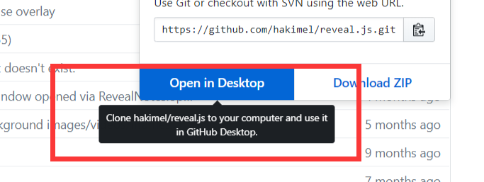
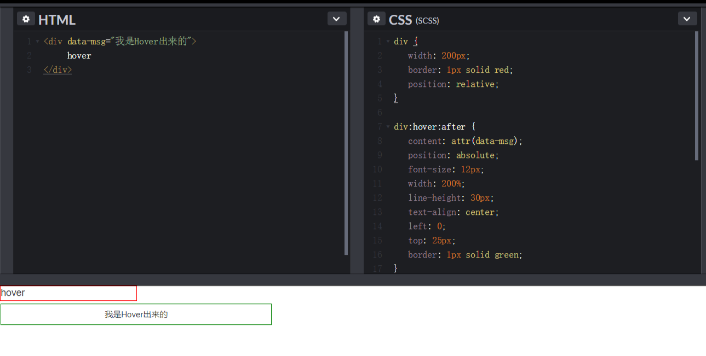
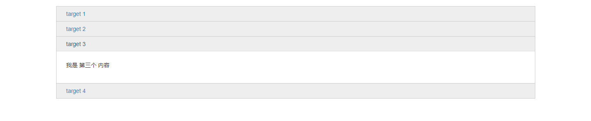
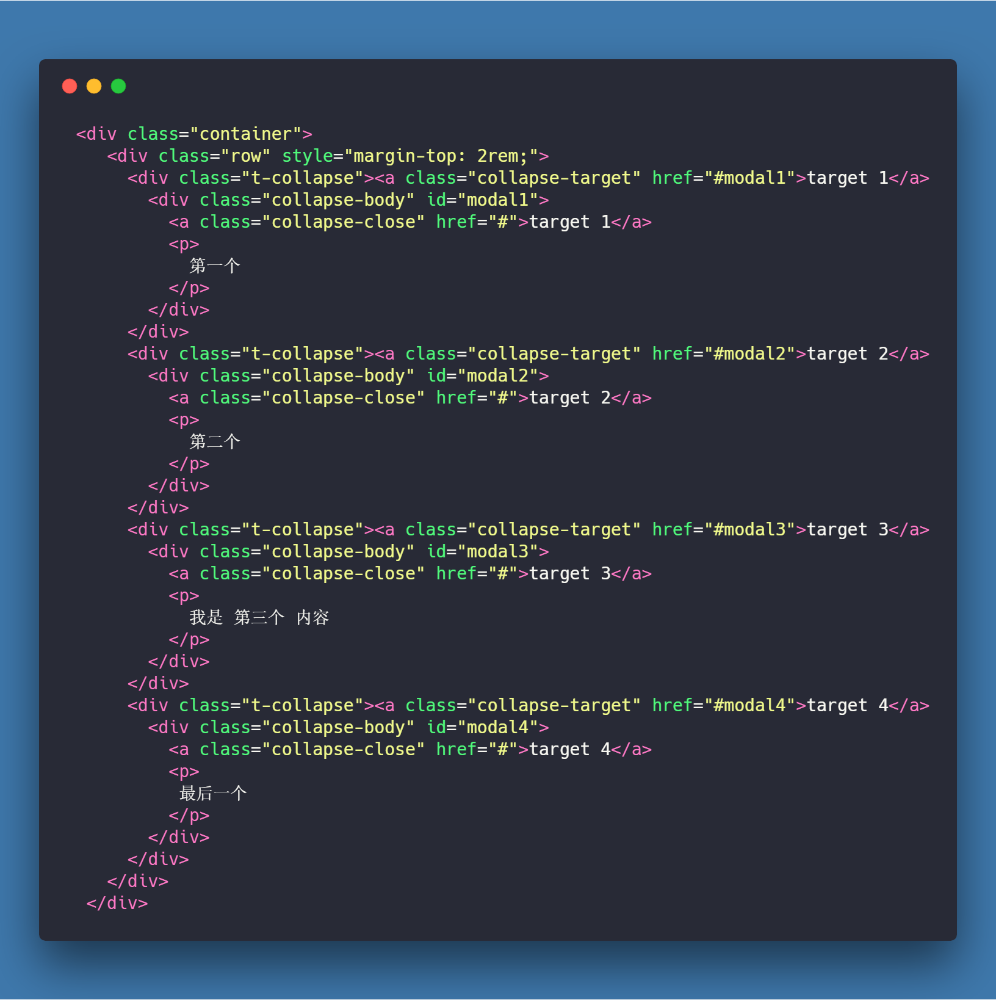
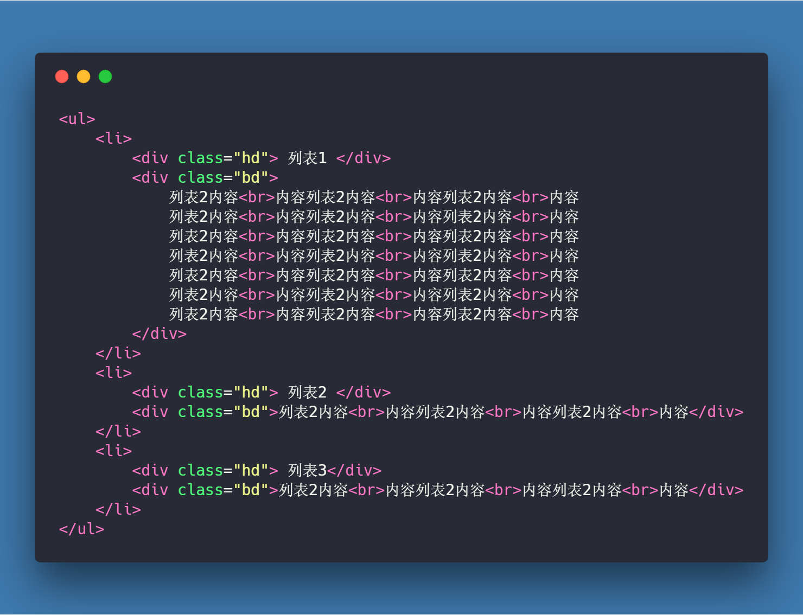
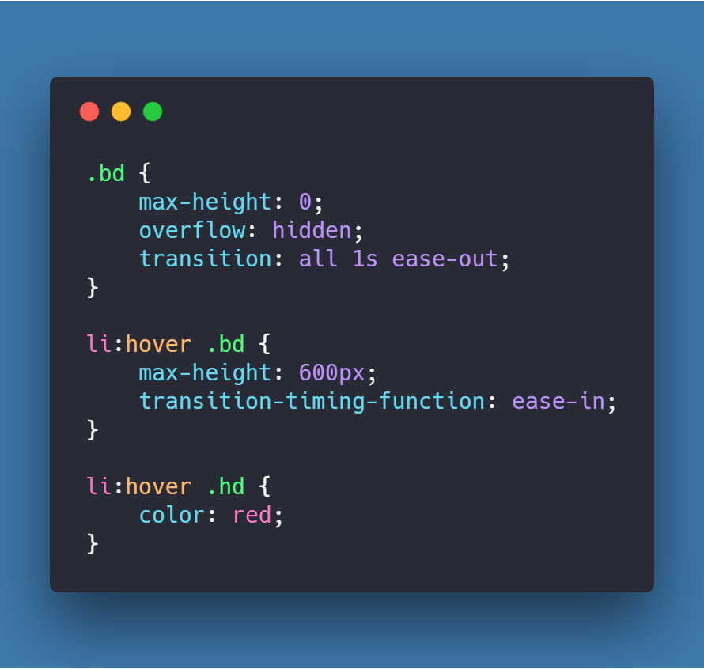

星图技术分享
Pluto
来班门弄斧一下，万一说的不好的地方指出哈！
反正也不改，哈哈😄(看不见🤨)
这周想分享一下CSS 一些小技巧
好，正片开始！😄
写的不好看，偷偷的吐槽一下就好了🤭
CSS 黑魔法系列
我也不知道为啥叫黑魔法，可能看起来逼格比较高吧
伪类和伪元素
伪类相信最熟悉也是用的最多的莫过于:hover, :active, :focus之类的
所以我这里主要整理了一些 生僻的但是又非常实用的伪类（元素）
需求一: 鼠标悬浮实现一个提示的文字，如图：
想必拿到需求都会想到了伪元素 after，但是文字怎么获得呢，又不能用 JavaScript
在 attr 里面塞入我们在 html 新增的 data-msg 属性，这样伪元素 (:after) 就会得到该值。

利用用 :valid 和 :invalid 来做表单即时校验
html5 丰富了表单元素，提供了类似 required,email,tel 等表单元素属性。同样的，我们可以利用 :valid 和 :invalid 来做针对html5表单属性的校验。
- :required 伪类指定具有required 属性的表单元素
- :valid 伪类指定一个通过匹配正确的所要求的表单元素
- :invalid 伪类指定一个不匹配指定要求的表单元素
因为是新属性，ie的兼容很差，好像只支持10
效果预览图:

CSSCollapse折叠面板
以前我们都是要花一番功夫用 js 来写这种Collapse折叠面板
现在 :target 的特性实现的显示隐藏或者Collapse 折叠面板。
代码如下:

效果图
同理还可以做纯CSS Tab页切换
想想就刺激
巧用 max-height 实现自动撑开内容的过渡动画
开玩笑的😂
代码示例如下
 The end

到这就结束了😄
感叹一下CSS 的强大！😮要学的css 还是很多
以为这就结束了嘛
并没有
临走前安利一波
- reveal.js 程序员web PPT神器
- carbon 超好看的代码截图工具